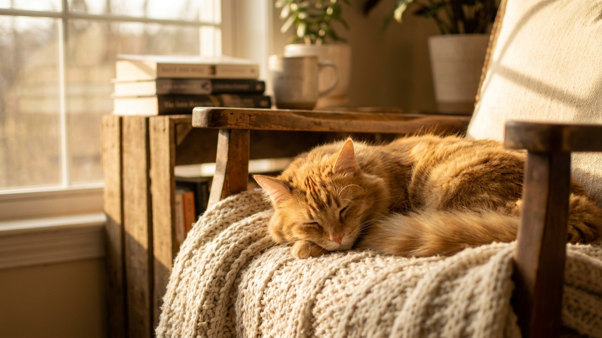

Дратхаар выглядит как солидный, немного суровый пёс — и это обманывает. За жёсткой бородатой мордой скрыт мотор, который не выключается. Без двух часов настоящей нагрузки в день он превращает квартиру в полигон. Это не плохой характер — это рабочая порода, которую взяли без плана. Ниже — честный разбор: сколько реально нужно этой собаке, как с ней жить в городе и кому она подойдёт, а кому нет.
🐾 Ваш питомец — дратхаар?
Заведите профиль в AnimaLife: приложение запомнит породу, возраст и вес и будет подсказывать по уходу именно для неё. Вопросы AI-ветеринару — круглосуточно и бесплатно.
Завести профиль → Завести в MAX →
У вас iPhone? AnimaLife есть в App Store
Дратхаар — универсальная охотничья легавая, выведенная для работы целый день в поле, на воде и в лесу. Взрослой собаке нужно минимум 1,5–2 часа активной нагрузки ежедневно. Не прогулка на поводке вдоль тротуара, а бег, поиск, апортировка из воды, спортивные упражнения.
Дратхаар видит белку, птицу или кошку — и моментально включается режим охоты. Это не агрессия, это инстинкт, который отбирался десятилетиями. В городе это означает несколько вещей.
Дратхаар — порода думающая и самостоятельная. Он способен принимать решения в поле без команды и перенесёт это качество в быт, если воспитание не выстроено.
Жёсткая шерсть дратхаара — его визитная карточка и рабочий инструмент: защищает в кустарнике, на воде, в мороз. Она требует особого ухода.
Подойдёт: охотникам, активным людям с гибким графиком, тем кто занимается бегом, велоспортом или конным спортом; семьям с детьми старше 7 лет; владельцам с опытом работающих пород.
Не подойдёт: тем, кто работает 9–18 без возможности выгуливать собаку; жителям маленьких квартир без ежедневного активного досуга; людям, которые хотят тихую и неприхотливую собаку; первичным владельцам без готовности вкладываться в обучение.
Дратхаар в правильных руках — надёжный партнёр на много лет. В неподходящих условиях — постоянный источник проблем. Выбирайте осознанно.
Материал носит информационный характер и не заменяет очную консультацию ветеринара.
🐾 У вас дратхаар?
AnimaLife соберёт уход под породу: к каким болезням есть склонность, что проверять по возрасту, чем кормить и когда пора к врачу. Бесплатно, прямо в мессенджере.
Собрать план ухода → Собрать в MAX →
У вас iPhone? AnimaLife есть в App Store
🐾 Понравился разбор?
Подпишитесь на канал — каждый день разбираем по одному тревожному симптому у кошек и собак: что в пределах нормы, а когда пора к врачу. Подпишитесь, чтобы не пропустить разбор, который может спасти здоровье вашего питомца.